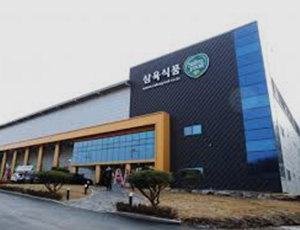
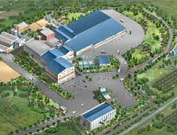
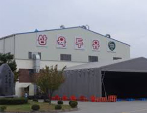

home>연구개발>품질관리시스템
품질관리시스템
-
1. 제조부문
- 콩의 영양과 맛은 그대로 살리고 철저한 위생 및 시설관리로 품질 제일주의를 실천
-
2.품질관리 부문
- 부적합 원인 분석 및 사전예방 국내 최고 수준으로 성장
- 맛과 영양을 겸비한 최상의 제품
- 웰빙 트랜드와 소비자의 건강요구에 부응한 자연건강제품
- 정확한 조사, 연구, 개발 실험 및 POLOT 현장 적용을 통한 소비자 제품 상품화
- 대학 및 관련 연구단체와 지속적인 정보교류 및 자료 수집 등으로 신기술 개발 및 적용
최첨단 설비를 갖춘 인간존중의 건강한 기업이념으로 제품을 만듭니다.

- 천안 제1공장 삼육식품 본사
- 삼육식품은 국내 두유업계 최초로 ISO22000(식품안정 경영시스템)을 인증 받았습니다. ISO 22000은 HACCP(식품안전관리인증기준)인증을 받은 기업만 획득 할 수있는 최첨단 품질 인증 제도 입니다. 천안에 위치한 제 1공장은 정선-건조-냉각-반할-두피분리-자숙-그라인더-원유추출 등 여러 공정을 거처 멸균 충전 포장에 이르기 까지 과학적인 분석과 안정방지 시스템 공정을 공정마다 설치하여 체계적으로 운영함으로 안전하고 믿을 수 있는 생산 시스템을 갖추고 있습니다. 공정 중 이상이 발생하면 다음 단계로 진행될 수 없도록 안전 시스템이 갖추어져 있는 최첨단 자동화 기계로 생산되기 때문입니다. 특별히 UHT(멸균)설비 이후에서 포장까지 일절 외부와 접촉할 수 없는 완벽한 차단이 되어 있어(방부제 없이 실온보관이 가능)안전하고 위생적인 제품을 소비자에게 공급할 수 있습니다. 자동 원유 포장기는 파우치 충전기, 테트라 충전기, 콤비블럭 충전기 총 3종류의 충전기가 있습니다. 삼육식품은 더 우수한 설비와 기술로 더 좋은 제품을 만들기 위해 지속적인 투자를 계속하고 있습니다. 공장주소 : 충청남도 천안시 서북구 직산읍 성진로 354-13 전화번호 : 041)575 - 3636

- 운주 제2공장
- 전북 운주에 위치한 제2공장은 94년 준공하여 고기 대용식인 단백식품 베지버거, 베지미트, 베지링크, 구프랑을 생산, 공급하므로 보다 건강한 식단을 위해 최선을 다하고 있습니다. 특히, 환경오염으로 인한 식생활의 위협 속에서 우리 농산품을 이용한 더 나은 먹거리 공급과 더 좋은 제품 개발에 박차를 가하며 콩 뿐만 아니라 다양한 원료와 아이템을 이용한 건강식품의 브랜드 가치를 더욱 높이고 있습니다. 또한, 2012년 5월에는 HACCP(식품안전관리인증기준) 인증을 받으므로 최고의 위생관리속에 제품들을 생산하고 있습니다. 공장주소 : 전라북도 완주군 운주면 장선로 38 전화번호 : 063)263 - 7737

- 봉화 제3공장
- 경북에 위치한 봉화 제 3공장은 93년 준공, 94년 뉴스타트 라면을 첫 출하로 시작하여 국민 건강을 위한 무탕면을 개발공급하여 라면업계에 신선한 충격을 준바 있습니다. 본공장과 같이 ISO 22000(식품안전경영시스템)과 HACCP(식품안전관리인증기준) 인증을 받았으며, 최고 위생관리, 최첨단 설비를 자랑하고 있습니다. 두유자동포장 설비로는 파우치충전기, 테트라 충전기, 콤비블럭 충전기, 병 충전기를 갖추고 있어 고객의 다양한 욕구를 충족시키기 위하여 만만의 준비가 되어있으며 고객의 사랑에 부응하고자 최선을 다 하고 있습니다. 공장주소 : 경상북도 봉화군 봉화읍1 농공단지길 44 전화번호 : 054)679 - 3600